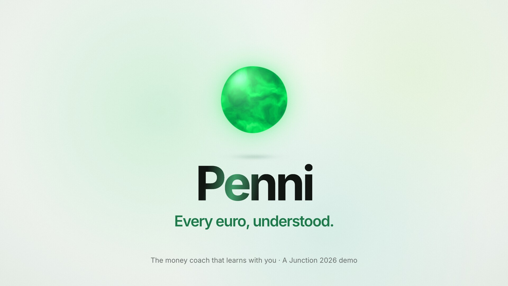
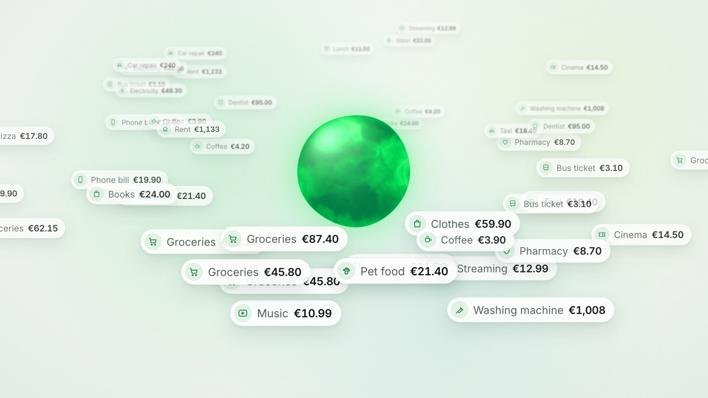
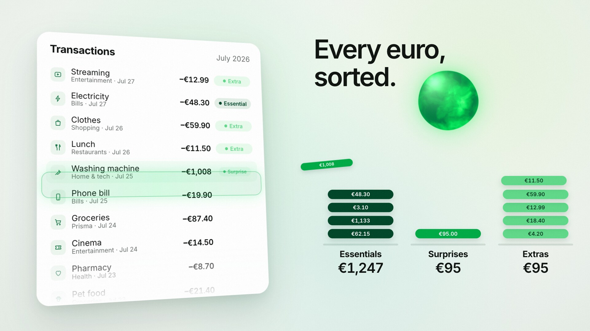
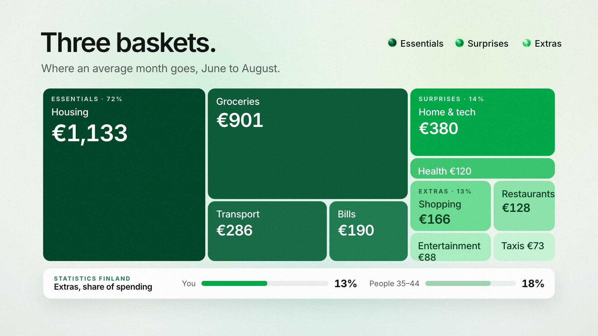
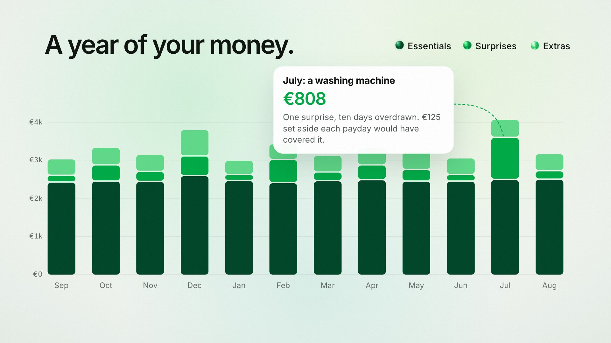
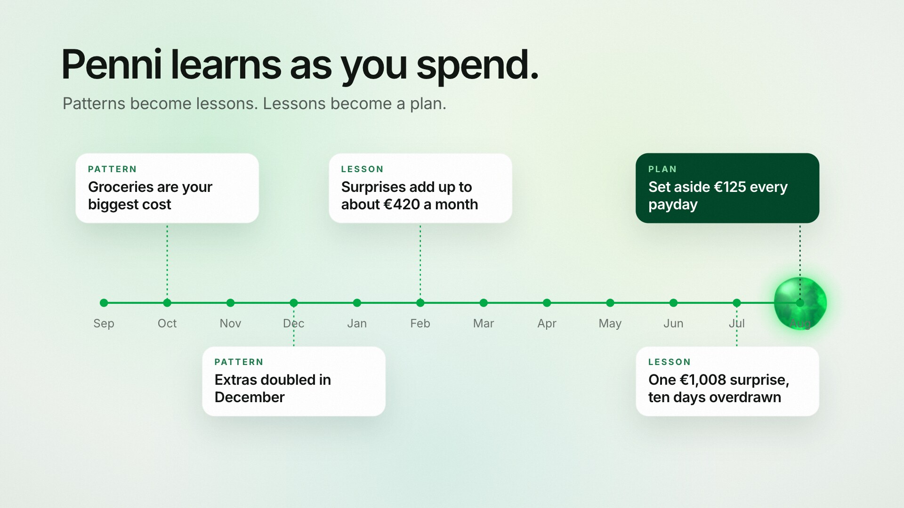
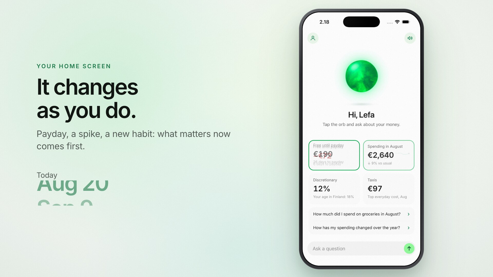
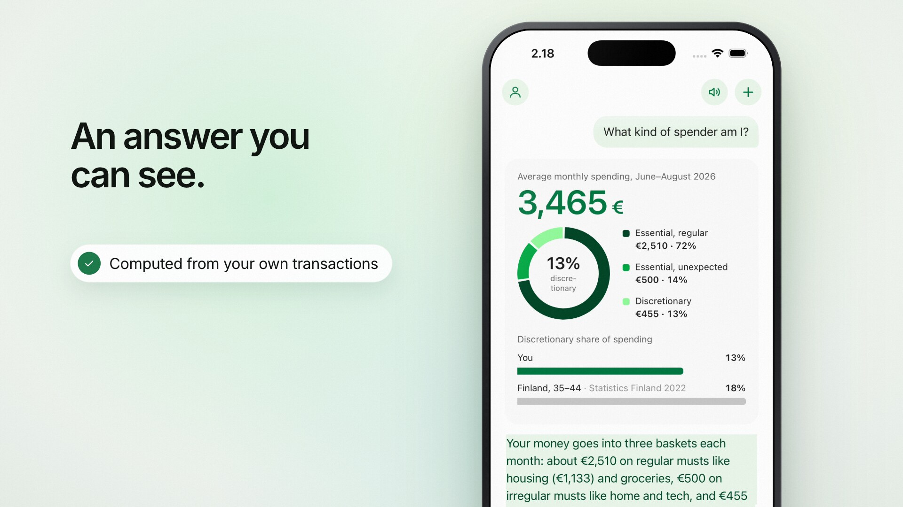
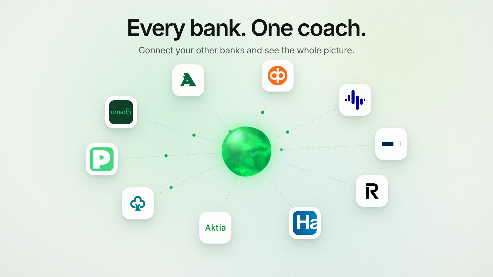

Money moves in a hundred small directions. Most people never see where it goes, until a surprise pushes them into the red.

Penni reads your own transactions and sorts every euro into three baskets.

Every basket broken down, and compared with people your age using open data from Statistics Finland.

One €1,008 washing machine in July meant ten days overdrawn. Over a year, surprises are predictable.

Month by month, Penni notices patterns, turns them into lessons and lessons into a plan.

The dashboard follows your spending, so what matters now comes first.

Tap the orb and speak. An answer you can see arrives in about three seconds, and is read aloud.

Connect your other banks and Penni reasons over the whole picture.

The model chooses the calculation and writes the words. The numbers always come from code.